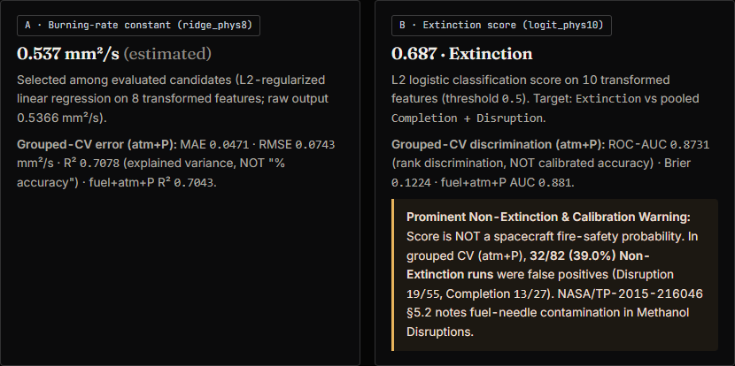

Dağınık NASA deneylerini, karşılaştırılabilir ve kaynağı izlenebilir bir araştırma akışına dönüştürüyoruz.
Bul
İhtiyacına uygun araştırma ve deney.
Karşılaştır
Gerçek koşullar ve geçerli ölçümler.
Kaynağa dön
Her sonuçta kayıt ve kanıt sınırı.
Bağlam: kullanıcı tarafından sağlanan challenge video transkripti. Uygulama: README.md, src/genaius/catalog.py ve data/processed/ manifestleri.
GeNAIus / Material Lab
02 / 07
02 · Malzeme kanıtı
Hangi oksijende ne ölçüldü?
Malzeme ve şekli seç.Ölçülmüş gaz değişimlerini incele.
Dağılımı ve kapsamı gör.Tek bir ortalama yerine değişkenliği oku.
Gerçek deneye ulaş.Eksik ölçüm sıfıra çevrilmez.
129 koşu107 Sample #
Gerçek arayüz · PSI-25 BASS-II
Ölçüm karşılaştırmasıdır; malzeme güvenlik sıralaması değildir.
Kaynak: PSI-25 CSV/ReadMe; frontend/js/lab.js, stats.js; src/genaius/analytics.py. O₂ ve gaz alanlarında başlangıç/son ayrımı korunur.
GeNAIus / Fire Animation & Models
03 / 07
03 · Koşulu ve veri desteğini sorgula
Kanıt kapsamı ve model tahmini ayrı.
Senaryo: TESTED / PARTIAL / GAP

FLEX: Ridge K tahmini + Logistic Regression skoru
Animasyon
Kavramsal anlatım; CFD veya deney tekrarı değil.
Senaryo
PMMA · %34 O₂ · Ay: indekslenen çekirdekte GAP.
Modeller
Veri desteği dışındaysa tahmin engellenir.
Kaynak: scenario_check.py (±0,05 O₂ yüzde puanı; ±0,01 atm); flex/training.py, flex_acceptance_v2.json. PSI-25/69 ayrı; logistic skor kalibre edilmiş güvenlik olasılığı değildir.
GeNAIus / SAFFIRE Case Study
04 / 07
04 · Yayımlanmış olayları bir araya getir
Ateşlemeden seçili duman ölçütüne.
344 s
981 − 637 · bizim türettiğimiz fark
637 s: ateşleme.
981 s: seçili 1 mg/m³ ölçütü.
Bildirilen yanma süresi 780 s; akış durması ayrı olay.
Gerçek arayüz · insansız Cygnus deneyi
Operasyonel alarm gecikmesi veya mürettebat maruziyeti iddiası yok.
Kaynak: retrieval/bm25.py, answering/, numerical_audit.py, openrouter.py, flex/training.py. Bazı grafik istatistikleri tarayıcıda; model ve cevap hesapları Python'da.
GeNAIus / Flame in Freefall
07 / 07
07 · Challenge'a katkımız
Kanıtı bul. Sınırını gör. Kaynağına dön.
Araştırmayı bul
Katalog ve kaynaklı rapor erişimi.
Modellemeyi destekle
İzlenebilir veri ve ayrı FLEX tahminleri.
Boşlukları görünür kıl
Ek deney ve kontrol araştırmalarına başlangıç.
Know what was tested. See what is missing. Trace every claim.
Hedef kullanıcı: yanma araştırmacıları ve uzay aracı / yaşam alanı mühendislik ekipleri.